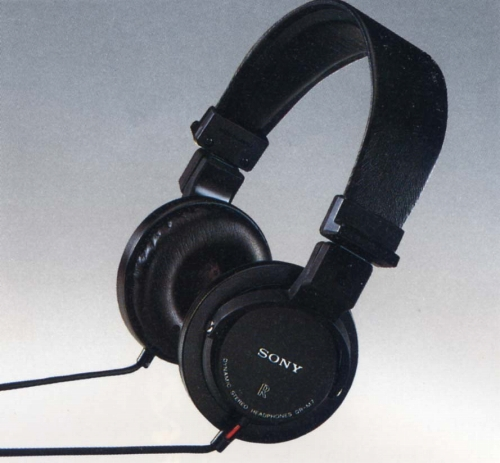

DR-M7

■価格 11,000円■型式 ダイナミック型密閉式■振動板 50�oドーム型■インピーダンス 63Ω■再生周波数帯域 15-25,000Hz■許容入力 400mW■感度 109ｄB/mW■コード 2ｍ リッツ線■重量 260g（コード含まず）■発売 1979年9月■販売終了 1983年頃■備考 アコースティカルデインプルド・ダイヤフラム採用 折りたたみ可能
ソニーのインデックスへ